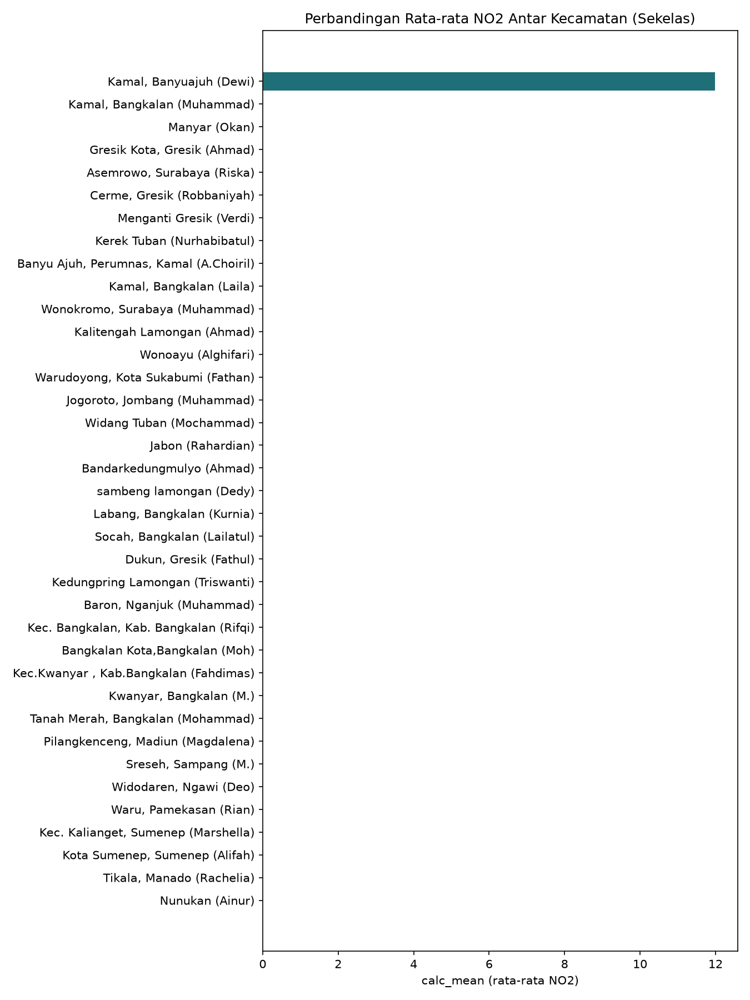
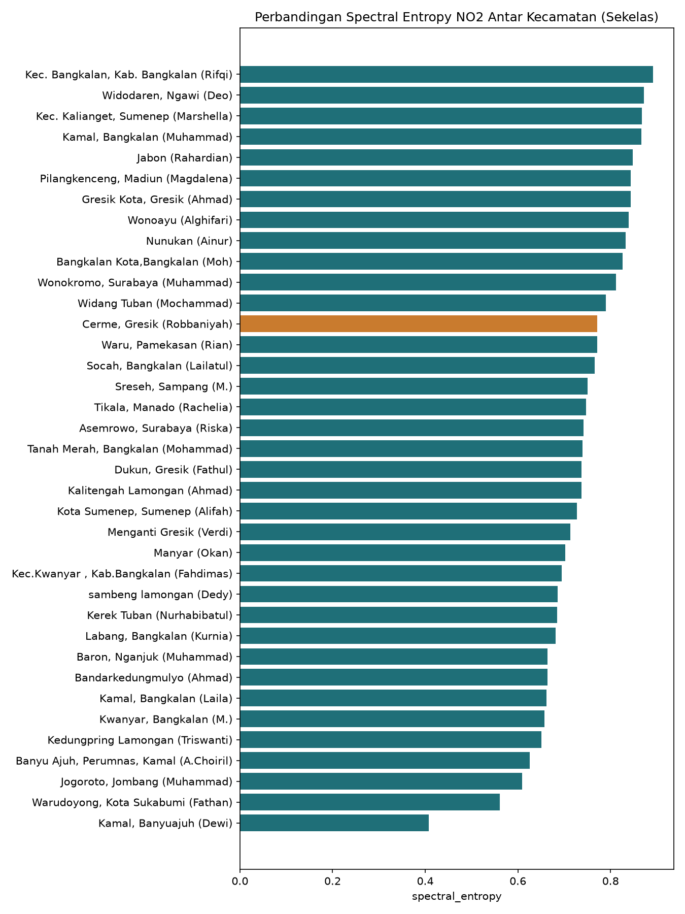

Tugas 3: Preprocessing & Ekstraksi Fitur (TSFEL)#
Latar Belakang#
Melanjutkan Tugas 1 dan 2, tugas ini fokus pada satu fitur polutan (NO2) di wilayah Kecamatan Cerme, Kabupaten Gresik — berbeda dengan Tugas 1-2 yang menggunakan boundary bebas di sekitar kawasan industri Manyar. Pemilihan kecamatan sesuai domisili masing-masing mahasiswa, sesuai instruksi kelas.
Alur Kerja#
Data NO2 di-crawl ulang khusus untuk boundary administratif Kecamatan Cerme (bukan gambar polygon manual, tapi batas resmi pemerintah), untuk rentang 31 Agustus 2025 – 31 Agustus 2026.
Dilakukan preprocessing: deteksi outlier dan imputasi missing value.
Data bersih diekstraksi menjadi 68 fitur menggunakan library TSFEL (Time Series Feature Extraction Library).
Fitur dikelompokkan berdasarkan domain: Statistical, Temporal, Spectral (dan Fractal).
Hasil ekstraksi diunggah ke sistem pengumpulan kelas.
1. Boundary Wilayah: Kecamatan Cerme#
Boundary yang digunakan adalah batas administratif resmi Kecamatan Cerme, Kabupaten Gresik, Provinsi Jawa Timur — diunduh dari batas-admin.geoit.dev dalam format GeoJSON, berbeda dari Tugas 1 yang menggunakan polygon gambar bebas.
Kecamatan Cerme dipilih karena merupakan domisili penulis, dan karakternya berbeda dari kawasan industri di Tugas 1 — didominasi area pertanian dan permukiman, sehingga sumber NO2 di sini kemungkinan besar didominasi lalu lintas kendaraan dan aktivitas rumah tangga, bukan industri berat.
2. Preprocessing#
Deteksi Outlier (Metode IQR)#
Outlier dideteksi menggunakan metode Interquartile Range (IQR):
Data dianggap outlier jika berada di luar rentang:
Nilai yang terdeteksi sebagai outlier diubah menjadi kosong (NaN) terlebih dahulu, untuk kemudian diisi ulang pada tahap imputasi.
Imputasi Missing Value#
Nilai kosong (baik dari data asli yang memang kosong — misal akibat tertutup awan pada citra satelit — maupun dari hasil deteksi outlier) diisi menggunakan:
Interpolasi berbasis waktu (
interpolate(method='time')) — mengisi celah dengan estimasi berdasarkan tren nilai di sekitarnya.Forward-fill & backward-fill — untuk mengisi sisa nilai kosong di ujung awal/akhir data yang tidak bisa diinterpolasi.
Hasil akhir: dataset NO2 tanpa nilai kosong dan tanpa outlier, siap diekstraksi fiturnya.
3. Ekstraksi 68 Fitur dengan TSFEL#
TSFEL (Time Series Feature Extraction Library) adalah pustaka Python yang secara otomatis menghitung ratusan jenis fitur karakteristik dari data deret waktu (time series) hanya dengan memanggil fungsi-fungsi fitur yang tersedia.
Dari data NO2 Kecamatan Cerme (1 tahun, harian) yang sudah bersih, diekstraksi tepat 68 fitur — setiap fitur meringkas satu karakteristik tertentu dari keseluruhan data setahun menjadi 1 angka (bukan lagi 1 angka per hari).
Source code ekstraksi: extract_features_cerme.py
Hasil ekstraksi: NO2_Cerme_TSFEL.csv
4. Pengelompokan 68 Fitur Berdasarkan Domain#
TSFEL mengelompokkan fitur ke dalam domain-domain berikut:
Domain Statistical (20 fitur)#
Fitur yang mendeskripsikan sebaran nilai data secara keseluruhan, tanpa memperhatikan urutan waktu.
abs_energy, average_power, calc_max, calc_mean, calc_median, calc_min, calc_std, calc_var, ecdf, ecdf_percentile, ecdf_percentile_count, ecdf_slope, entropy, hist_mode, interq_range, kurtosis, mean_abs_deviation, median_abs_deviation, rms, skewness
Domain Temporal (16 fitur)#
Fitur yang menangkap pola perubahan nilai dari waktu ke waktu.
auc, autocorr, calc_centroid, distance, lempel_ziv, mean_abs_diff, mean_diff, median_abs_diff, median_diff, negative_turning, neighbourhood_peaks, pk_pk_distance, positive_turning, slope, sum_abs_diff, zero_cross
Domain Spectral (26 fitur)#
Fitur berbasis transformasi frekuensi (FFT/wavelet), menangkap pola periodik/musiman dalam data.
fundamental_frequency, human_range_energy, lpcc, max_frequency, max_power_spectrum, median_frequency, mfcc, power_bandwidth, spectral_centroid, spectral_decrease, spectral_distance, spectral_entropy, spectral_kurtosis, spectral_positive_turning, spectral_roll_off, spectral_roll_on, spectral_skewness, spectral_slope, spectral_spread, spectral_variation, spectrogram_mean_coeff, wavelet_abs_mean, wavelet_energy, wavelet_entropy, wavelet_std, wavelet_var
Domain Fractal (6 fitur — kategori tambahan di luar 3 domain utama)#
Fitur yang mengukur kompleksitas/self-similarity sinyal.
dfa, higuchi_fractal_dimension, hurst_exponent, maximum_fractal_length, mse, petrosian_fractal_dimension
Ringkasan: Statistical (20) + Temporal (16) + Spectral (26) + Fractal (6) = 68 fitur
5. Hasil Ekstraksi Fitur (Milik Sendiri)#
Berikut seluruh 68 nilai fitur hasil ekstraksi NO2 Kecamatan Cerme:
Fitur |
Nilai |
|---|---|
abs_energy |
7.51745e-07 |
auc |
0.0121711 |
autocorr |
3 |
average_power |
3.25431e-09 |
calc_centroid |
118.29 |
calc_max |
0.000113708 |
calc_mean |
5.26352e-05 |
calc_median |
5.08489e-05 |
calc_min |
7.84193e-06 |
calc_std |
2.16751e-05 |
calc_var |
4.69812e-10 |
dfa |
0.876405 |
distance |
231 |
ecdf |
0.0237069 |
ecdf_percentile |
5.16794e-05 |
ecdf_percentile_count |
115.5 |
ecdf_slope |
15791.7 |
entropy |
1 |
fundamental_frequency |
0.00862069 |
higuchi_fractal_dimension |
1.95986 |
hist_mode |
4.48952e-05 |
human_range_energy |
0 |
hurst_exponent |
0.760805 |
interq_range |
2.89651e-05 |
kurtosis |
-0.285991 |
lempel_ziv |
0.215517 |
lpcc |
0.647167 |
max_frequency |
0.443966 |
max_power_spectrum |
43.5571 |
maximum_fractal_length |
-2.3707 |
mean_abs_deviation |
1.74297e-05 |
mean_abs_diff |
1.5521e-05 |
mean_diff |
-5.05161e-08 |
median_abs_deviation |
1.47537e-05 |
median_abs_diff |
1.25611e-05 |
median_diff |
1.61124e-07 |
median_frequency |
0.0862069 |
mfcc |
29.0873 |
mse |
1.16518 |
negative_turning |
65 |
neighbourhood_peaks |
11 |
petrosian_fractal_dimension |
1.03856 |
pk_pk_distance |
0.000105867 |
positive_turning |
65 |
power_bandwidth |
0.443966 |
rms |
5.69235e-05 |
skewness |
0.39445 |
slope |
3.20787e-08 |
spectral_centroid |
0.139716 |
spectral_decrease |
-2.09791 |
spectral_distance |
-1.08872 |
spectral_entropy |
0.771136 |
spectral_kurtosis |
2.33087 |
spectral_positive_turning |
39 |
spectral_roll_off |
0.443966 |
spectral_roll_on |
0 |
spectral_skewness |
0.813145 |
spectral_slope |
-0.0444779 |
spectral_spread |
0.153038 |
spectral_variation |
0.435391 |
spectrogram_mean_coeff |
6.79365e-10 |
sum_abs_diff |
0.00358536 |
wavelet_abs_mean |
5.06571e-06 |
wavelet_energy |
2.78441e-05 |
wavelet_entropy |
2.18084 |
wavelet_std |
2.72305e-05 |
wavelet_var |
7.64648e-10 |
zero_cross |
0 |
Data lengkap: NO2_Cerme_TSFEL.csv
6. Perbandingan dengan Kecamatan Lain (Sekelas)#
Setelah data seluruh kelas (37 kecamatan berbeda) digabung, berikut perbandingan beberapa fitur kunci:
Rata-rata NO2 (calc_mean) Antar Kecamatan#

Spectral Entropy Antar Kecamatan#
Spectral entropy menunjukkan seberapa “acak” (entropy tinggi) vs “periodik/musiman” (entropy rendah) pola NO2 sepanjang tahun.

Tabel Ringkas Perbandingan#
nama |
daerah |
calc_mean |
calc_std |
spectral_entropy |
autocorr |
|---|---|---|---|---|---|
Muhammad Ali Murtadho |
Baron, Nganjuk |
2.9e-05 |
9e-06 |
0.664351 |
7 |
Ahmad Dafi Zidni Alfarisi |
Kalitengah Lamongan |
3.9e-05 |
2e-05 |
0.736851 |
3 |
Okan Syailendra wahyudi |
Manyar |
6.6e-05 |
3.1e-05 |
0.70243 |
7 |
Rahardian Ananta |
Jabon |
3.2e-05 |
1.1e-05 |
0.848125 |
2 |
Triswanti Jannatul Ma’wa |
Kedungpring Lamongan |
3e-05 |
1.1e-05 |
0.651185 |
8 |
Muhammad Isa |
Jogoroto, Jombang |
3.3e-05 |
1.3e-05 |
0.609055 |
10 |
Laila Maghfiroh |
Kamal, Bangkalan |
4.1e-05 |
1.8e-05 |
0.661859 |
11 |
Dedy Nurohim |
sambeng lamongan |
3.1e-05 |
1e-05 |
0.685528 |
6 |
Ahmad Syahrul Farihin |
Gresik Kota, Gresik |
6.1e-05 |
2e-05 |
0.843411 |
3 |
Nurhabibatul Umah |
Kerek Tuban |
4.3e-05 |
1.6e-05 |
0.685283 |
7 |
Rian Renaldy |
Waru, Pamekasan |
1.6e-05 |
7e-06 |
0.770757 |
5 |
Rachelia Andini Tendean |
Tikala, Manado |
8e-06 |
5e-06 |
0.747429 |
5 |
Moh Rafie Nazar J |
Bangkalan Kota,Bangkalan |
2.8e-05 |
9e-06 |
0.825623 |
3 |
Lailatul Hasanah |
Socah, Bangkalan |
3e-05 |
1.1e-05 |
0.765899 |
4 |
Ainur Raftuzzaki |
Nunukan |
7e-06 |
4e-06 |
0.833144 |
2 |
Ahmad Maulana Ishaq |
Bandarkedungmulyo |
3.2e-05 |
1.1e-05 |
0.664111 |
6 |
Mochammad Zaenal Abidin |
Widang Tuban |
3.2e-05 |
1e-05 |
0.789597 |
3 |
Muhammad Zaidan Nabil Rafi |
Kamal, Bangkalan |
7.2e-05 |
2.5e-05 |
0.866469 |
1 |
Robbaniyah Umdatun Ni’mah |
Cerme, Gresik |
5.3e-05 |
2.2e-05 |
0.771136 |
3 |
Fahdimas Akmal |
Kec.Kwanyar , Kab.Bangkalan |
2.7e-05 |
1.2e-05 |
0.694141 |
11 |
Dewi Geizya |
Kamal, Banyuajuh |
11.98377 |
5.091847 |
0.407387 |
42 |
Magdalena Jovita Hatuopar |
Pilangkenceng, Madiun |
2.5e-05 |
7e-06 |
0.843911 |
2 |
Alifah Sayyidaturrhohma |
Kota Sumenep, Sumenep |
1.5e-05 |
9e-06 |
0.727952 |
11 |
Riska Nana Nuril Fadilah |
Asemrowo, Surabaya |
5.4e-05 |
1.6e-05 |
0.741942 |
3 |
M. Hendrik Purwanto |
Sreseh, Sampang |
2.4e-05 |
1e-05 |
0.750765 |
9 |
Alghifari Amar Mukhasyafah |
Wonoayu |
3.6e-05 |
1.1e-05 |
0.838884 |
2 |
Fathan Ruhul Alam |
Warudoyong, Kota Sukabumi |
3.6e-05 |
1.1e-05 |
0.561411 |
15 |
Fathul Aziz Saifuddin |
Dukun, Gresik |
3e-05 |
1.1e-05 |
0.73751 |
3 |
Deo Candra Saputra |
Widodaren, Ngawi |
2.4e-05 |
6e-06 |
0.872358 |
2 |
Rifqi Fairurrafi |
Kec. Bangkalan, Kab. Bangkalan |
2.9e-05 |
1.1e-05 |
0.891563 |
1 |
Mohammad Aziz Huzaini |
Tanah Merah, Bangkalan |
2.5e-05 |
8e-06 |
0.739665 |
4 |
Muhammad izzul Millah Aqil |
Wonokromo, Surabaya |
4e-05 |
1.1e-05 |
0.811484 |
3 |
M. Fatihul Umam |
Kwanyar, Bangkalan |
2.7e-05 |
1.3e-05 |
0.657224 |
13 |
A.Choiril Anwar El-Asfihani Risydan |
Banyu Ajuh, Perumnas, Kamal |
4.3e-05 |
1.8e-05 |
0.625351 |
11 |
Verdi Setyawan Ardiansyah Putra |
Menganti Gresik |
4.6e-05 |
1.9e-05 |
0.713724 |
3 |
Kurnia Maulinda Sari |
Labang, Bangkalan |
3.1e-05 |
1.4e-05 |
0.681756 |
12 |
Marshella Aulia Putri |
Kec. Kalianget, Sumenep |
1.6e-05 |
6e-06 |
0.867727 |
1 |
Data lengkap sekelas: ekstraksi_fitur_no2_psd-a.csv
7. Hasil & Interpretasi#
calc_mean(rata-rata NO2 setahun): …calc_std(variasi NO2): …spectral_entropy: mengindikasikan seberapa “acak” vs “periodik” pola NO2 sepanjang tahunautocorr: mengindikasikan seberapa kuat pola berulang (misal pola mingguan akibat aktivitas kerja vs akhir pekan)
Pengumpulan#
File NO2_Cerme_TSFEL.csv (tanpa modifikasi) telah diunggah ke sistem pengumpulan kelas: psd.basisdata2-c.my.id, atas nama [Nama Kamu], Kecamatan Cerme.